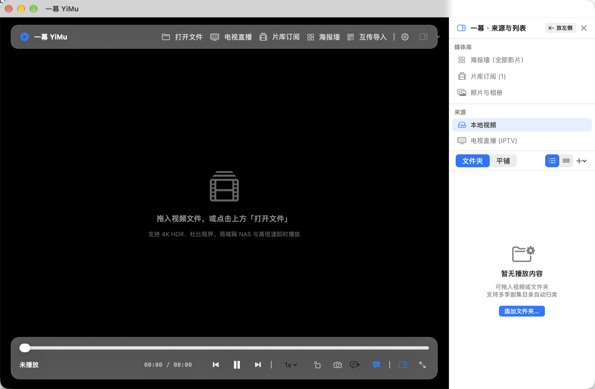
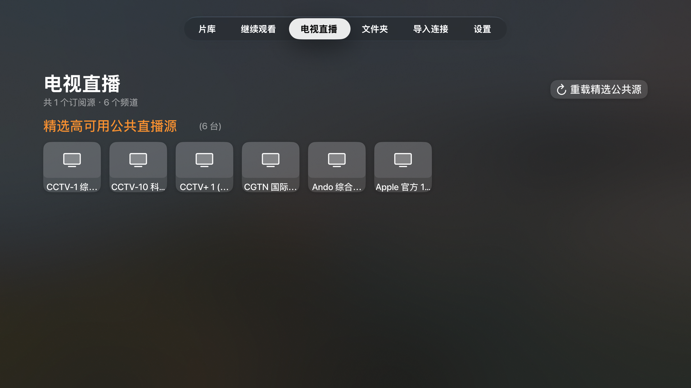
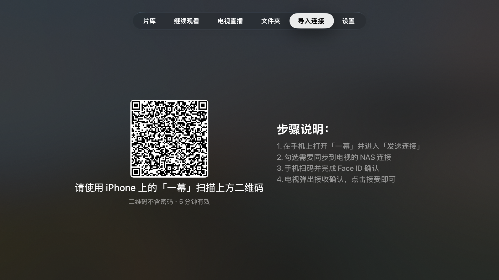
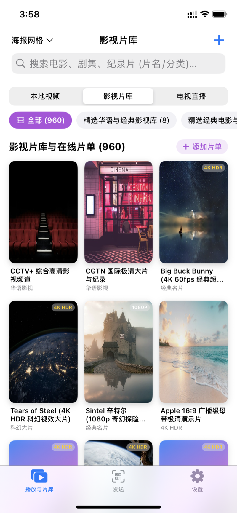

无需在 NAS 安装复杂服务端，纯客户端实时智能刮削，从 4K 巨幕到手持设备无缝流转。




剥离臃肿社交与广告插件，回归播放器本质
基于 MPVKit 自研预热流水线，上下划屏即刻换台，告别漫长转圈等待。提供快速测活，红绿灯直观标注节点健康状态。
直连 NAS 或标准订阅，无需部署任何转码服务，由苹果芯片端侧直接刮削 TMDB 影视海报、演职员表与简介。
智能清洗视频文件名并精准检索双语字幕。支持 -0.5s ~ +0.5s 时间轴无级微调，彻底告别字幕与画面口型脱节。
所有 SMB 密码与云盘凭据只进 Apple 硬件钥匙串，绝不经过任何第三方服务器，片单与观看历史纯本地安全存储。
接入标准开放驱动，支持阿里云盘等主流私有云原画免转码流畅点播，大文件 4K HDR 极速秒开。
通过 Mac App Store 通用购买 (Universal Purchase)，只需购买一次 Pro 会员，Mac、iPhone、iPad 与 Apple TV 均可尊享完整体验。
订阅链接（通常是以 .m3u、.m3u8 或 .txt 结尾的网络 URL，或者是合规的频道列表）是一种开放的标准播放索引格式。它本身并不储存任何音视频文件，而是像一本「影视节目目录」，记录了各电视频道或点播视频的播放流地址、节目名称与分组分类。
Mac 端专为 macOS 桌面优化，支持键盘快捷键、TMDB 影视刮削海报墙、悬浮画中画以及线路快速测活。
针对触屏交互深度定制，上下滑屏无缝换台，支持系统级画中画与在线字幕微调。
一幕在 Apple TV 上绝非简陋的投屏接收器，而是拥有完整自研播放内核（MPVKit）与独立界面架构的原生 tvOS 应用。电视顶栏常驻 6 大功能模块，彻底覆盖客厅全场景需求：